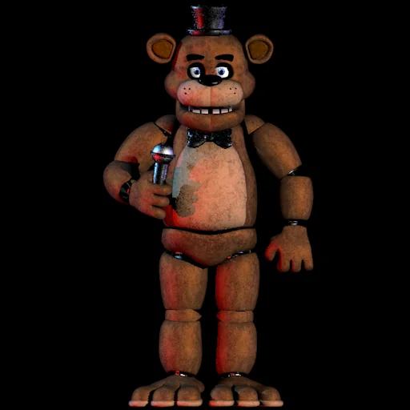

Aparência

Freddy é um urso animatrônico marrom com um focinho preto e inchado. No palco, ele veste um chapéu alto e preto e uma gravata borboleta enquanto segura um microfone. Em sua cabeça tem o que parece ser marcas de mãos. Suas orelhas redondas são articuladas e são capazes de se mover para trás e para frente. Freddy tem dentes metálicos, e como a maioria dos animatrônicos na pizzaria, não tem dentes visíveis em sua mandíbula superior.